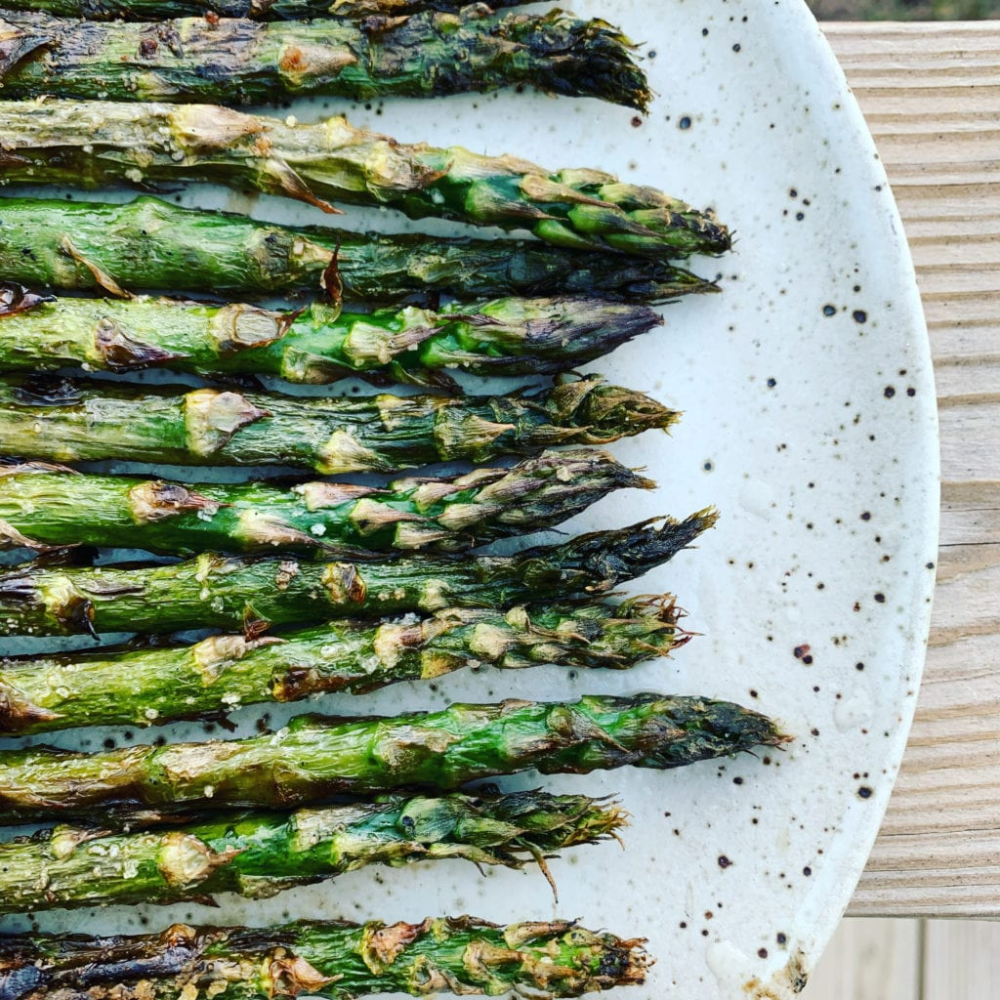

Roasted Asparagus

Description
Roasted asparagus in the oven is one of the easiest way to prepare
asparagus.
Ingredients
- 1 pound fresh asparagus, trimmed
- 1 tablespoon olive oil
- 1 medium lemon, zested
- 1/2 teaspoon kosher salt
- 1/2 teaspoon freshly grated nutmeg
- Freshly ground black pepper
Steps
- Heat oven to 500ºF.
-
Lay the asparagus on a long double layer of heavy-duty aluminum foil.
Drizzle with the olive oil and toss to coat. Spread the spears into a
single layer. Fold the edges of the foil to make a tray. Roast in the
oven for 5 minutes.
-
Carefully toss the spears with tongs and roast just until tender and
tips begin to brown, about 5 minutes more.
-
Sprinkle with the zest, salt, nutmeg, and pepper, to taste, and toss to
evenly distribute. Transfer to a serving platter and serve immediately.
Source:
Alton Brown